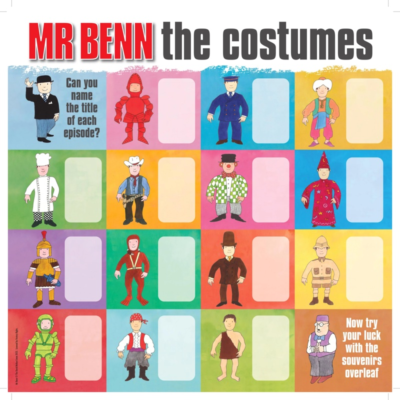
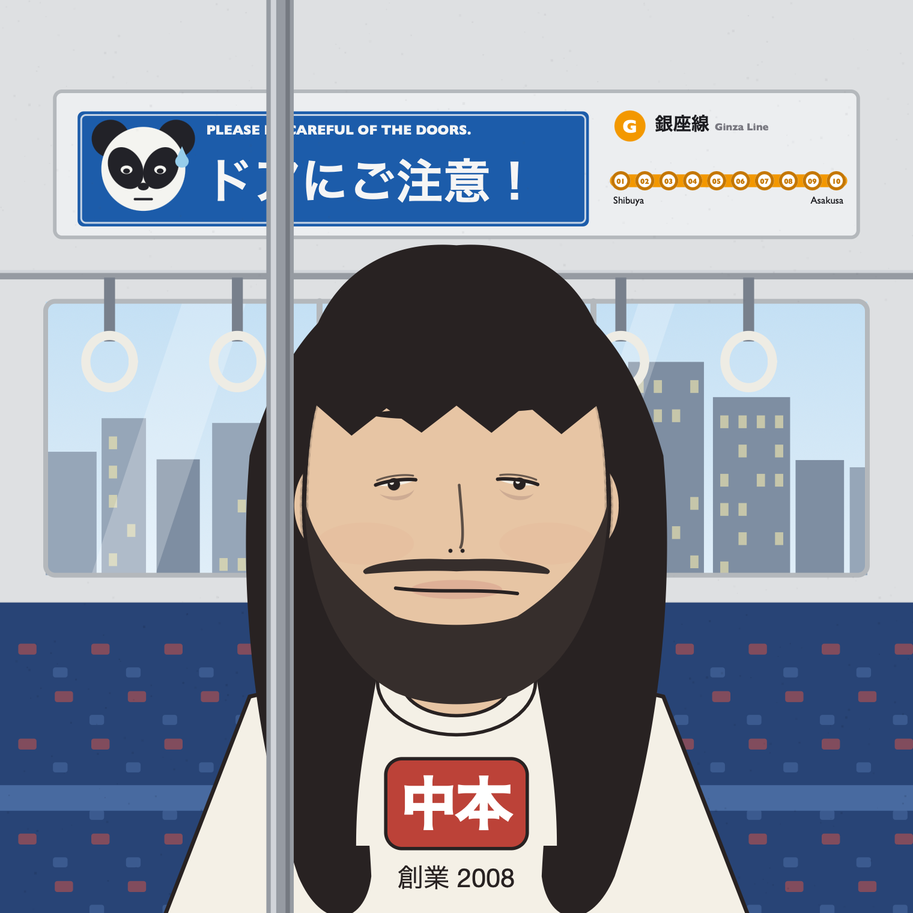

The story so far
Inspiration
1971
Where Mr Benimaru came from, and the magic door that started it all.
I imagine everyone remembers a favorite TV show they had when they were a kid? For me, this was Mr Benn. As a young Japanese child I would sit completely captivated, watching this bowler-hatted Englishman change into fancy dress and walk through the changing-room door into a fantastical adventure as a diver, pirate or magician. Mr Benn, the English gentleman, became my childhood icon. Was it just coincidence that my own name, “Benimaru”, mirrored his? Needless to say, when I had the chance to live and work in England, I grasped it with both hands!
{kind=link}
{kind=link}

{kind=link}
P5.js
Mr Benimaru is the story of an everyday Japanese man's life in England. It's a nostalgic, whimsical and unashamedly feel-good NFT collection, carefully hand-coded and lovingly crafted in p5.js.
Each costume is a snapshot in time from Mr Benimaru's catalogue of adventures. Some pay tribute to iconic Mr Benn episodes, whilst others share a more contemporary glimpse of English culture. There are costumes that pay tribute to popular NFT projects, as well as Mr Benimaru's cosplay attempts at his favorite TV shows. No two costumes are the same — each brings something new to the table and stands on its own as a unique one-of-one!
TheArt
With regard to the artist and “team” — for reasons unbeknownst to me, they have chosen not to be named. Nonetheless, it should be somewhat discernible that they have great familiarity with, and a keen eye for, the subtle nuances of both Japanese and English culture — and a cheeky playfulness to boot! I would certainly take any promise of “utility” or “roadmap” with a healthy pinch of salt. We Japanese have a saying: 千里の道も一歩から — “A journey of a thousand miles begins with a single step.” Toodles!
{kind=link}

{kind=link}
{kind=link}